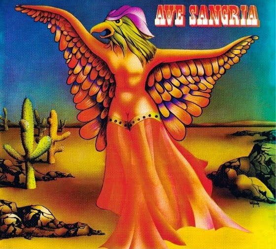

Ave Sangria
Ave Sangria, lançado em 1974, é o álbum de estreia da banda brasileira de rock progressivo e psicodélico. Com uma mistura de rock, MPB e influências experimentais, o disco traz arranjos complexos e letras poéticas sobre temas urbanos e introspectivos. A sonoridade única e inovadora do álbum reflete a efervescência do rock brasileiro dos anos 70. Ave Sangria é considerado um clássico cult, especialmente entre os fãs de rock psicodélico e progressivo. A banda se destacou por sua energia crua e ousadia sonora. O álbum é um marco na história do rock nacional.
Tracklist
Lado 1: "Verdes Campos", "Iolanda", "Nuvem Cigana", "O Homem da Gravata Florida".
Lado 2: "Ave Sangria", "O Jardim", "Súplica Cearense", "Bicho Homem".